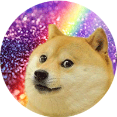
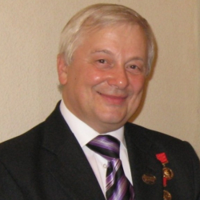

слайдер с технологиями
css фреймворк

Bootstrap — свободный набор инструментов для создания сайтов и веб-приложений. Включает в себя HTML- и CSS-шаблоны оформления для типографики, веб-форм, кнопок, меток, блоков навигации и прочих компонентов веб-интерфейса.
js библиотека 
Wow.js — маленькая библиотека, которая позволяет включать анимацию на определенном этапе прокрутки страницы. Весит очень мало, и к тому же полностью самостоятельна – то есть нет необходимости подключать jQuery или других монстров. Animate. CSS – скрипт, который непосредственно отвечает за саму анимацию.
адаптивность сайта
Адаптивность личности – способность к адаптации, приспособлению человека к существующим в обществе требованиям и критериям оценки за счет присвоения норм и ценностей данного общества. Адаптация — процесс взаимопроникающий. Это значит, что способна изменяться не только личность, но и окружающая среда.